HD
Le lecteur intégré de notre webradio nécessite l'activation du javascript. Si vous ne souhaitez pas activer javascript, vous pouvez également écouter directement le flux, en qualité 192 kbps, ou en qualité 128 kbps.
Ruse48, Radio Utopique, Sentimentale et Éphémère de 48 heures de vendredi 23 à dimanche 25 août 20 heures, à l'issue de Utopie Sonore 2019, résidence ouverte de création sonore.